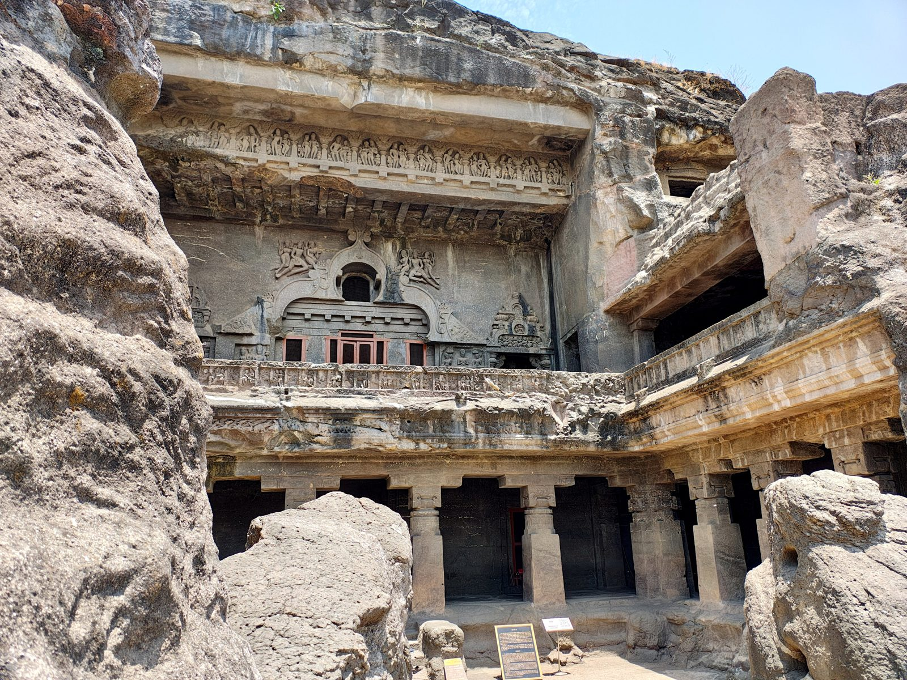

Caves cut into the Traps
From Bhaja and Karla to Ajanta and Ellora, a thousand years of monks and patrons carved halls, monasteries and whole temples out of the lava pile – architecture by subtraction, in the Deccan’s own rock.

The Trap country is drilled with architecture. Beginning around the second century BC, Buddhist communities on the trade routes over the ghats cut prayer halls and monasteries into the basalt scarps – Bhaja and Karla beside the Bhor Ghat road, Pandavleni above Nashik – and the tradition ran for a millennium through the painted galleries of Ajanta, the Hindu and Jain sequences of Ellora, and the island sanctuary of Elephanta in Bombay harbour, culminating in the Kailasa at Ellora: a full freestanding temple complex excavated top-down from a single slope of flows, perhaps the largest monolithic rock excavation on earth.
The rock made the method. Trap basalt is massive, fine-grained and horizontally bedded in thick flows – strong enough for wide unsupported spans and soft enough for iron tools; the carvers read the pile like quarrymen, siting halls in workable horizons – many caves stand in the softer amygdaloidal compound flows – working around the cooling joints where they could and exploiting them where they helped. The caves are thus this collection’s rocks used at their most intimate: the intertrappean pauses and flow boundaries of period four reappear as the string-courses and floor levels of period seven. Ajanta’s painters even ground their colours partly from the Traps’ own minerals; the celebrated blue alone was imported lapis.
The caves also join this site’s collections physically: Karla and Bhaja watch the railway alignment of the Deccan timeline’s Bhor Ghat entry, Ellora stands beside Daulatabad and the Deccan sultanates’ capitals, and Ajanta’s rediscovery in 1819 – by a Madras officer tiger-hunting in the gorge – belongs to the same Company decades as the geologists of this collection’s final entry.
In the story
The Traps as sanctuary: the plateau’s defining rock turned into its greatest art. The caves’ geography – ghat roads, scarps, harbours – recapitulates half the collection, and their rediscovery hands the narrative to the Company readers of the rock with whom it closes.
In the Deccan timeline
Tughluq moves the capital to Daulatabad (1327 · Prologue) · The railway climbs the ghats (1853–1863)